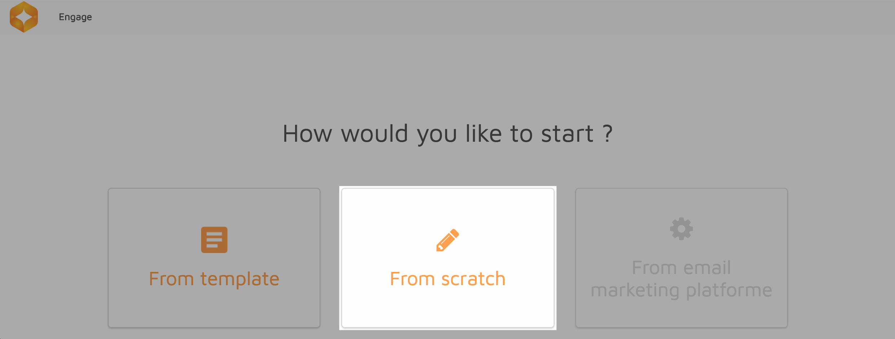
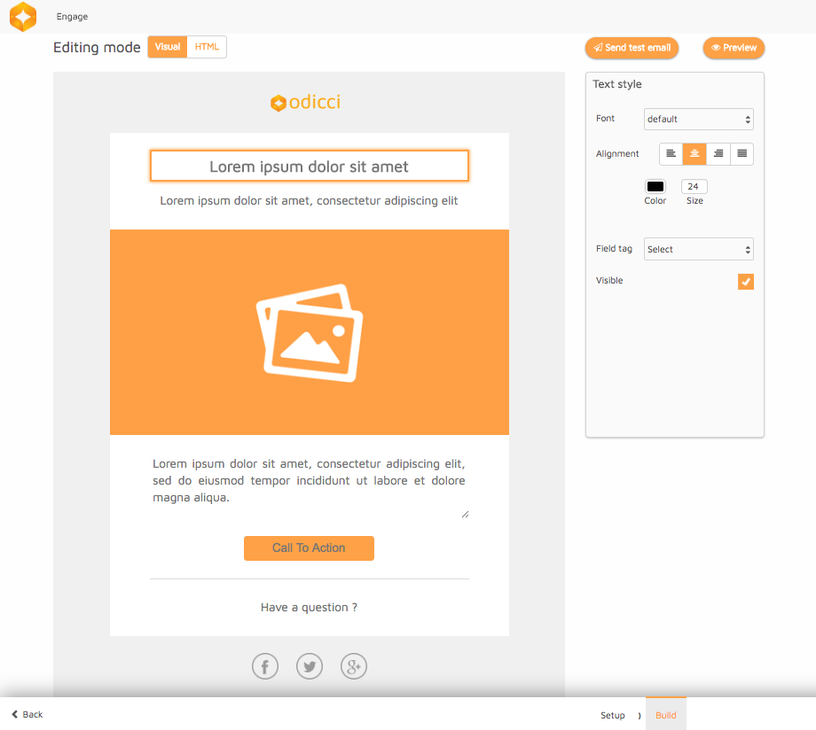

In this tutorial we will give you a step by step guide to the use of all the tools required to create an email template from scratch as well as using one of the templates provided.
On the Engage homepage you will find a table of all your email templates with action buttons on each template allowing you to:
- Edit
- Delete

- Click on new on the top right of the Email Templates table.
- Click on From Scratch 
- The setup page will appear, fill in the fields required and click on the Next button to continue.
- Once you have configured your setup, you will be redirected to the Build section where you can write or paste you HTML for your email.
- Click on the Save button to save the template.
- To test your email, simply click on the Send test email button and enter an email address where you can receive it.
-
To preview what your email will look like on different devices, click on the Preview button.
Click the back button to navigate back to setup and back to the list of templates.
- Click on new on the top right of the Email Templates table.
- Click on From template
- The setup page will appear, fill in the fields required and click on the Next button to continue.
- Once you have configured your setup, you will be able to choose a template style.
- You can now add text and images to your chosen template by simply clicking on the text areas or the image. The settings for each component will appear on the right. 